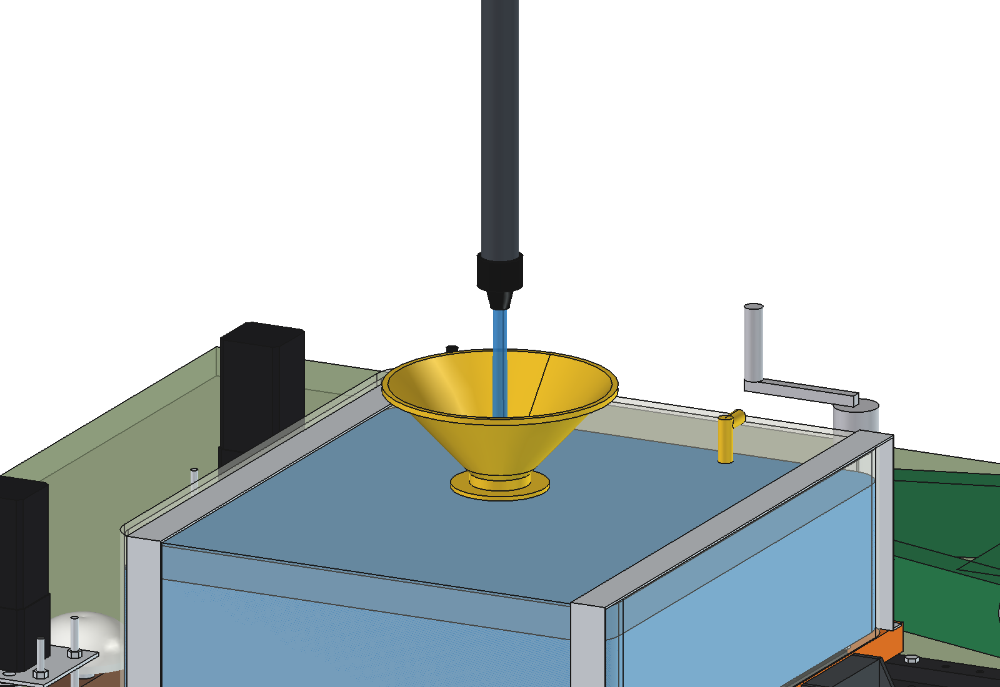
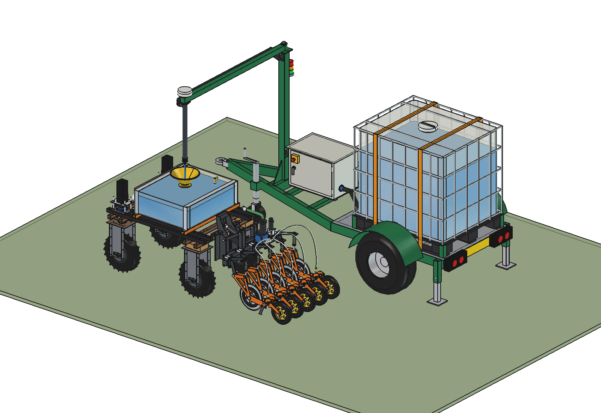
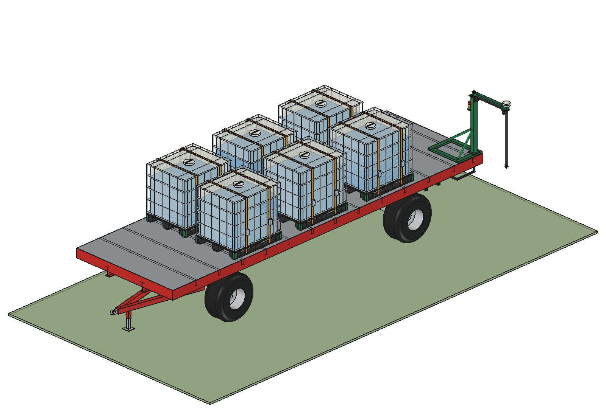
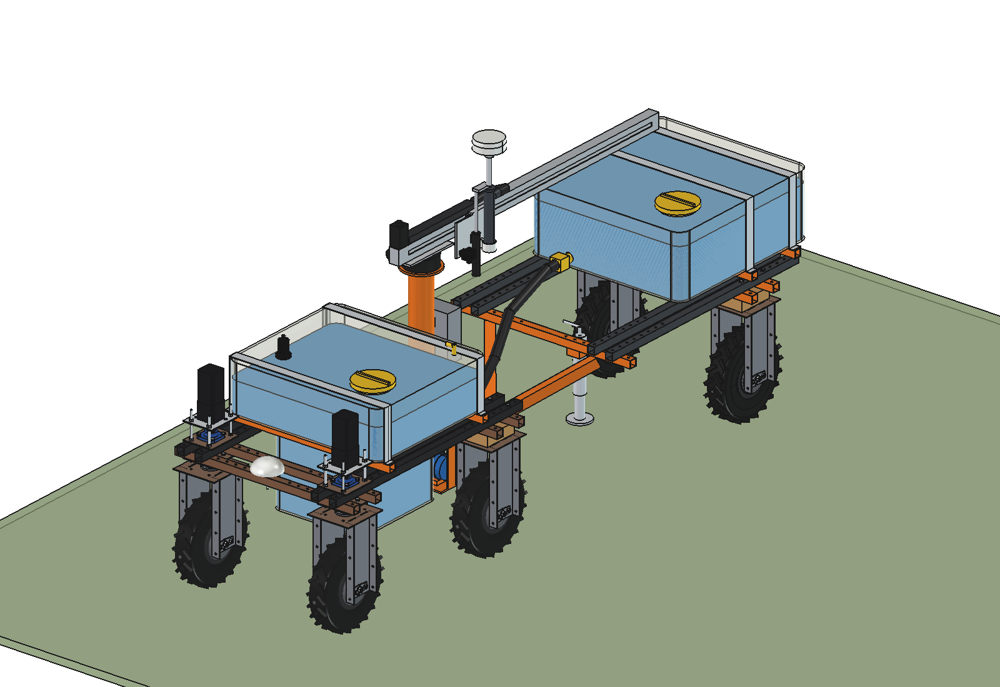
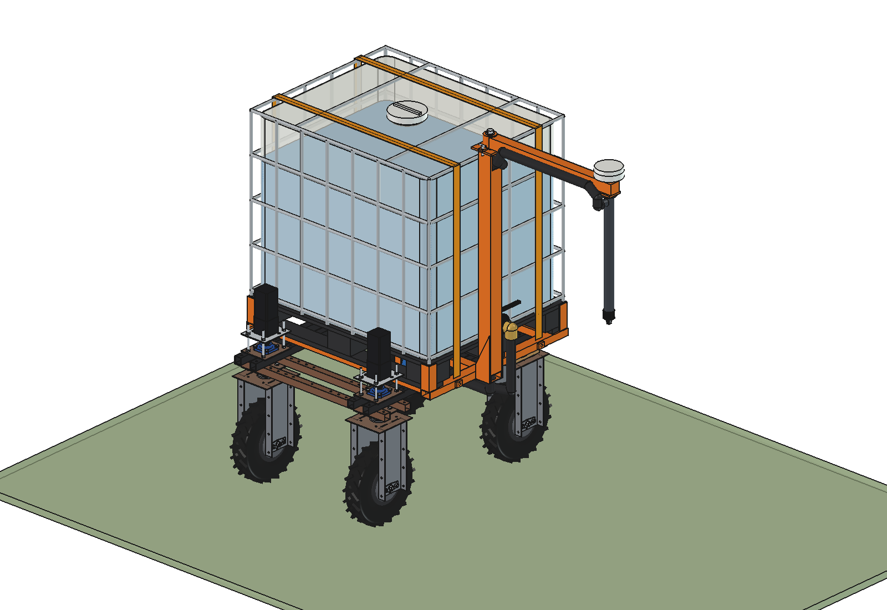
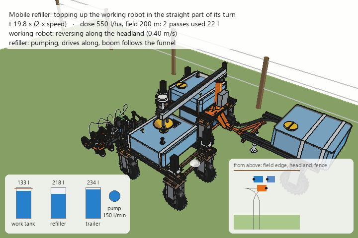
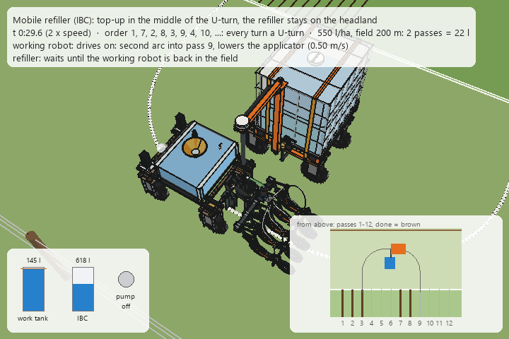
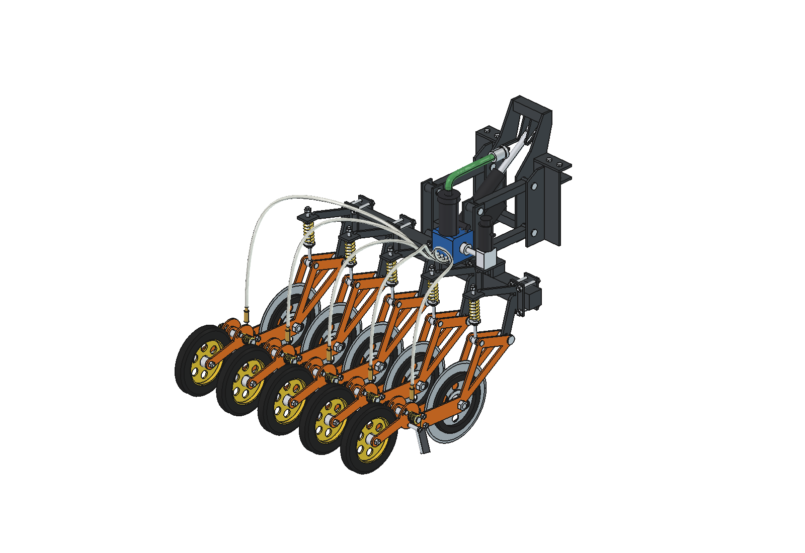
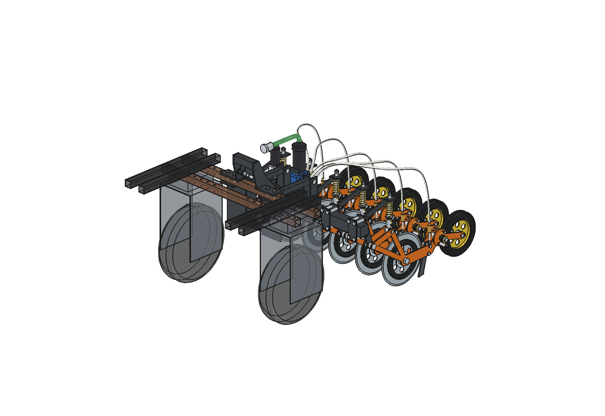
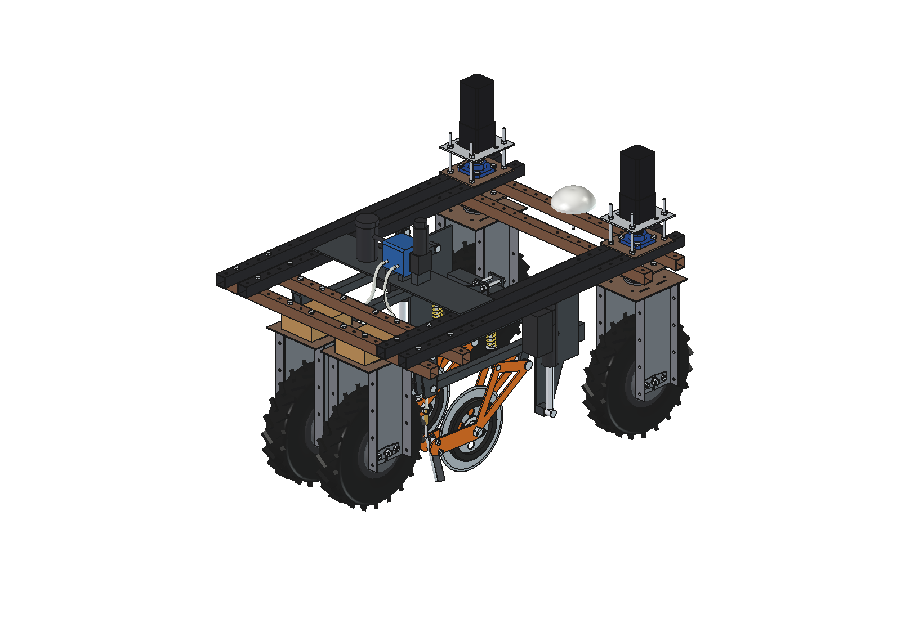

De toediener heeft maar een kleine tank mee. Is die leeg, dan moet hij terug om bij te vullen. Daar gaat veel tijd in zitten. Met een docking-systeem kan hij in het veld bijgevuld worden. Het ligt tussen "zo groot mogelijke capaciteit" en "volledig autonoom" in. Voor de opslag gaan we uit van standaard IBC's, dat lijkt het makkelijkst.
Een antenne bovenop de overlader. Zo weet de robot precies waar de kop zit. Daarbij kijkt een camera mee als dubbele check. Pas als die allebei kloppen, mag de kraan open om te vullen.

Een IBC-aanhanger staat op de kopakker. De toediener rijdt er naartoe, de arm met de kop komt boven de trechter, vullen, klaar. Past 1 of 2 IBC's.


Een IBC op een eigen robot, of als aanhanger die de robot zelf meetrekt. Is hij leeg, dan rijdt hij zelf naar huis, of naar een plek dichter bij het veld om te vullen. Technisch kan dit allemaal. Of het ook financieel interessant is, is een tweede.
De rijdende tank rijdt in lijn met de toediener mee. Zo hoeft de toediener nooit stil te staan en hoeft hij niet steeds op dezelfde plek te vullen. Het vullen gebeurt in de bocht.



Kleinere tank: het kan ook een kleinere tank zijn. Die rijdt dan zelf terug naar het erf, vult zich daar op stenen en komt als een soort carrier weer terug.
De toediener slaat rijen over, zodat elke keer een hele U-bocht past. De refiller staat binnen die bocht en de toediener staat even stil onder het mondstuk.

Achter de toediener heb ik een paar aandrukwielen gemaakt. Na het insnijden en toedienen sluiten die de sleuf meteen weer.


Ik heb ook een versie gemaakt waar de toediener direct tussen het frame zit. De twee achterwielen sluiten dan de baan van 2 toedieners weer dicht. Dat kan en het komt uit, maar ik ben er zelf geen grote fan van.
